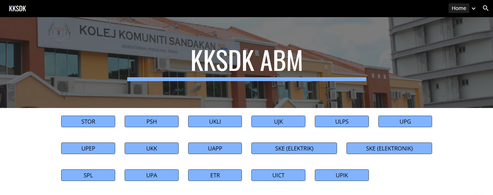
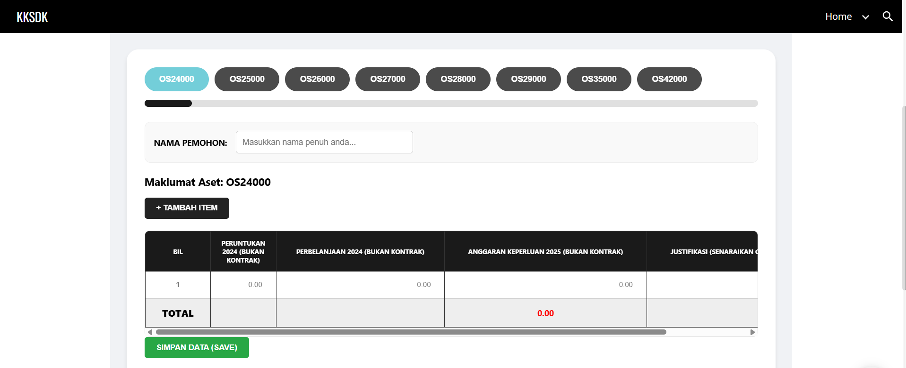

Centralizing Departmental Asset Management
The department relied on manual Excel spreadsheets and physical form submissions for asset applications. This caused fragmented data, slow approval times, and difficulties in generating real-time inventory reports.
A web-based platform designed to centralize all asset requests. By using Google Apps Script, the system automates data collection directly into a master database, eliminating the need for manual file sharing.

Landing Page Prototype

Landing Page Prototype
One of the main challenges was working within the limitations of Google Sites for dynamic content. I had to find creative ways to use Google Apps Script to bridge the gap between the static frontend and the dynamic database needs of the department.
This project taught me how to analyze organizational workflows and translate them into digital solutions. I improved my ability to write efficient scripts to automate tasks and learned the importance of "Digital Transformation" in a professional workplace setting.